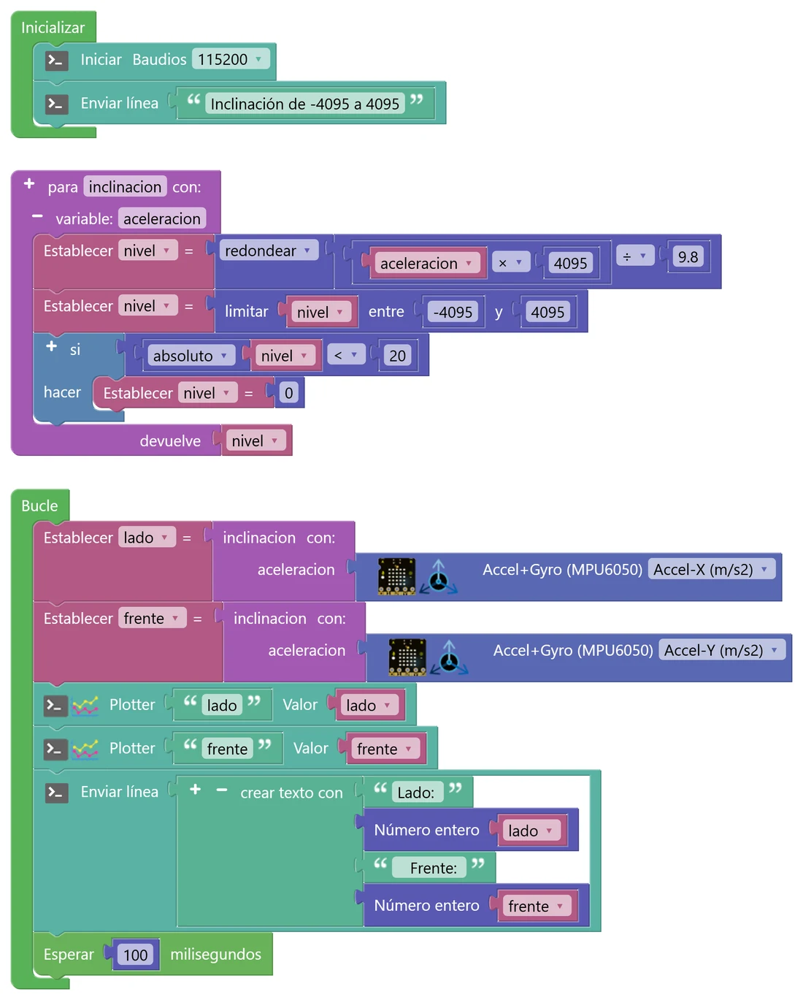
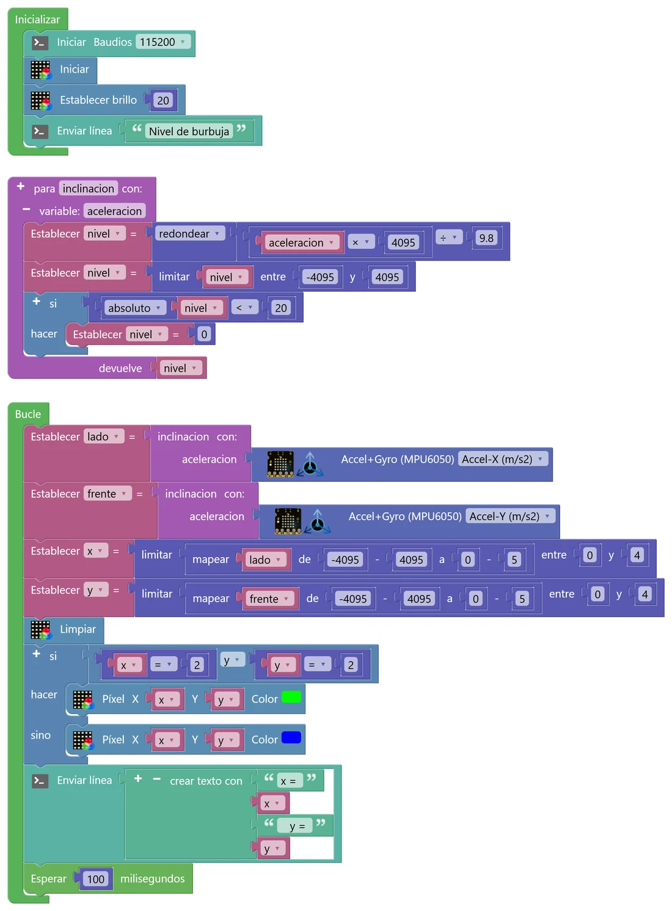
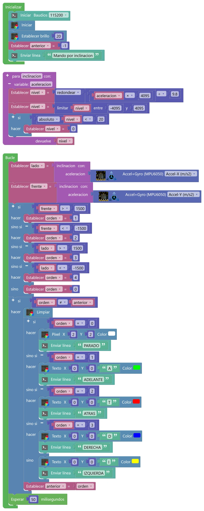

N7 Funciones e inclinación
Dentro de la placa hay un chip que nota la gravedad: el mismo que usa tu móvil para girar la pantalla. Leerlo «a pelo» es incómodo (da números con decimales, que tiemblan y que hay que interpretar). En este nivel vas a fabricar tu propio bloque, una función llamada inclinacion, que convierte esas lecturas en un número fácil: 0 si la placa está plana, hasta 4095 si la inclinas del todo hacia un lado y hasta −4095 hacia el otro. Con ese bloque harás un nivel de burbuja y un mando por inclinación para un robot.
🎯 Objetivo
- Entender qué mide el acelerómetro y por qué sirve para saber si la placa está inclinada.
- Crear una función que recibe un dato (parámetro), hace unos cálculos y devuelve un resultado.
- Usar tres herramientas que salen en casi todos los programas de robótica: la regla de tres, limitar y la zona muerta.
- Reutilizar tu función en varios programas: nivel de burbuja, mando por inclinación y retos.
🧠 Antes de empezar
El chip MPU6050 tiene dos sensores. El acelerómetro mide aceleraciones en tres direcciones (ejes X, Y y Z), en m/s². Aunque la placa esté quieta, siempre nota la gravedad: 9,8 m/s² hacia abajo. Si la placa está plana, toda la gravedad cae en el eje Z (el que atraviesa la placa) y a X e Y no les toca nada. Si la inclinas, la gravedad se reparte y X o Y empiezan a marcar. El giroscopio mide lo deprisa que gira la placa; en este nivel apenas lo usaremos.
El bloque Accel+Gyro (MPU6050) está en micro:STEAMakers › Sensores. En su desplegable eliges qué quieres leer: Accel-X, Y o Z (m/s²), Giro-X, Y o Z (º/s) o Ángulo-X, Y o Z (º).
🐍 Funciones en Python
def doble(numero): # numero es el parámetro resultado = numero * 2 return resultado # lo que devuelve x = doble(5) # llamada: x vale 10 y = doble(x) # y vale 20
🧩 En STEAMakersBlocks
En Funciones hay dos bloques: para [nombre] hacer (hace algo y ya está) y para [nombre] … devuelve (calcula y entrega un valor). Con el + del bloque añades parámetros (variable: …). Al crear una función aparece, en ese mismo menú, el bloque para llamarla, con el nombre que le hayas puesto.
La función se coloca suelta en el espacio de trabajo, fuera de Inicializar y de Bucle.
💡 Para entenderlo: una función es una máquina con una entrada y una salida
Imagina una máquina de zumo: por arriba metes naranjas (la entrada, el parámetro), dentro pasan cosas que no necesitas ver (exprimir, colar) y por abajo sale el zumo (lo que devuelve). Para usarla no hace falta saber cómo funciona por dentro: basta con meter naranjas. Con nuestra función pasará igual: le das una aceleración en m/s² y te devuelve un número de −4095 a 4095. Ventajas: la cuenta se escribe una vez, se usa todas las veces que quieras (para el eje X, para el Y, en otros programas) y, si hay que corregir algo, se corrige en un solo sitio.
🧩 Programa 1 · Tu propio bloque: la función inclinacion
Vamos a construir la función pensando cada paso. Primero el qué y el por qué; al final, cómo se monta con bloques.
Paso 1 · Mira los datos tal y como llegan
Envía al plotter el bloque Accel-X e inclina la placa despacio. Verás que va de unos −9,8 (inclinada del todo hacia un lado) a unos 9,8 (hacia el otro), pasando por 0 cuando está plana. Fíjate también en dos problemas: los números tienen decimales y, aunque no toques la placa, tiemblan un poco (es el ruido de la medida).
Paso 2 · Cambia la escala con una regla de tres
Queremos que 9,8 m/s² se convierta en 4095. ¿Por qué 4095? Porque es la escala que ya conoces de los sensores de luz y sonido (el ADC del N4): así todos los sensores «hablan el mismo idioma». La regla de tres es:
9,8 m/s² → 4095 aceleración → nivel
nivel = aceleración × 4095 ÷ 9,8
| Aceleración (m/s²) | Cuenta | Nivel |
|---|---|---|
| 0 | 0 × 4095 ÷ 9,8 | 0 |
| 4,9 | 4,9 × 4095 ÷ 9,8 | 2047,5 → 2048 |
| 9,8 | 9,8 × 4095 ÷ 9,8 | 4095 |
| −2,45 | −2,45 × 4095 ÷ 9,8 | −1023,75 → −1024 |
Como no queremos decimales, el resultado se redondea. Fíjate en que el signo se conserva solo: si la aceleración es negativa, el nivel también.
Paso 3 · Limita el resultado
Si mueves la placa con un golpe brusco, la aceleración puede pasar de 9,8 por un momento (por ejemplo 12) y la cuenta daría 5014: un valor fuera de la escala que podría confundir al resto del programa. Por eso limitamos el nivel entre −4095 y 4095, con el bloque limitar que ya usaste en el N4.
Paso 4 · Añade una zona muerta
Con la placa plana, el nivel debería ser 0, pero por el ruido saldrá 12, −7, 18, −3… Para un robot eso es un problema: un 12 podría hacer que se moviera un poquito sin que nadie lo pida. La solución es una zona muerta: si el nivel está muy cerca de 0 (entre −20 y 20), lo dejamos en 0. En lenguaje de programador: si el valor absoluto del nivel es menor que 20, nivel = 0. El valor absoluto es el número sin signo (el absoluto de −12 es 12), así una sola comparación sirve para los dos lados.
💡 Para entenderlo: zona muerta no es lo mismo que histéresis
Los dos trucos sirven para que el ruido no moleste, pero son distintos. La zona muerta es una franja alrededor de un valor (aquí, el 0) dentro de la cual el programa hace como si fuera ese valor: es lo que tiene el joystick de un mando de consola para que el personaje no se mueva solo. La histéresis, que viste en el reto pro del N4, usa dos umbrales distintos, uno para encender y otro para apagar, y la placa tiene que recordar en qué estado estaba (como el termostato que enciende a 19 °C y apaga a 21 °C). La zona muerta no necesita recordar nada: solo mira el valor de ahora.
¿Por qué 20? Es un punto de partida. Si con tu placa plana el nivel sigue bailando fuera de 0, prueba 30 o 50. Si la haces muy grande, la placa no notará las inclinaciones pequeñas. Elegir ese número midiendo es parte de tu trabajo (criterio 1.2).
Paso 5 · Devuelve el resultado
La función termina entregando el nivel a quien la haya llamado. Así queda, en pseudocódigo:
función inclinacion(aceleracion): nivel = redondear(aceleracion × 4095 ÷ 9,8) # paso 2 nivel = limitar(nivel, −4095, 4095) # paso 3 si absoluto(nivel) < 20: nivel = 0 # paso 4 devuelve nivel # paso 5
Pruébala antes de montarla: la calculadora
Mueve el deslizador y mira qué hace cada paso con la aceleración. Busca un valor en el que actúe limitar y otro en el que actúe la zona muerta.
Ahora, móntala con bloques

🛠️ Móntalo paso a paso
- Crea dos variables de número (Variables): nivel (la usará la función por dentro) y, para el Bucle, lado y frente.
- De Funciones, arrastra al espacio de trabajo el bloque para … devuelve. Cambia «hacer algo» por inclinacion (sin tilde, mejor: los nombres de funciones no deben llevar tildes ni espacios). Pulsa el + del bloque, arrastra una variable dentro de la ventanita y llámala aceleracion: es el parámetro.
- Paso 2 dentro de la función: Establecer nivel = bloque redondear (Matemáticas, el bloque que pone «raíz cuadrada»; cámbialo en su desplegable). Dentro, una operación ÷ cuyo primer hueco es otra operación aceleracion × 4095 y el segundo, 9.8 (con punto, no con coma). La variable aceleracion la encuentras en Variables, como las demás.
- Paso 3: Establecer nivel = limitar (Matemáticas) nivel entre −4095 y 4095.
- Paso 4: un si (Lógica) con la condición absoluto(nivel) < 20. «absoluto» es otra opción del mismo bloque de «raíz cuadrada». Dentro del si: Establecer nivel = 0.
- Paso 5: en el hueco devuelve, la variable nivel. La función ya está hecha. Mira en Funciones: ha aparecido un bloque nuevo, inclinacion con: aceleracion. ¡Es tu bloque!
- En Inicializar: consola y un mensaje. En Bucle: Establecer lado = inclinacion(Accel-X) y Establecer frente = inclinacion(Accel-Y), metiendo el bloque Accel+Gyro en el hueco «aceleracion».
- Dos Plotter (lado y frente), un Enviar línea con «Lado: … Frente: …» (con Número entero de Matemáticas para que no salgan decimales) y Esperar 100 ms. Súbelo y abre el Serial Plotter.
- ¿Hacia dónde tienes que inclinar tu placa para que lado sea positivo? ¿Y frente? Haz un dibujo de la placa con dos flechas que lo indiquen: lo necesitarás en los siguientes programas.
- Con la placa plana, ¿el nivel se queda en 0? Si no, ¿qué valor de zona muerta necesita tu placa? Prueba también a quitar el «si» de la zona muerta y compara.
- Completa esta tabla con tu placa y compárala con la cuenta 4095 × seno(ángulo): 0º → 0, 30º → 2048, 45º → 2896, 90º → 4095. ¿El nivel crece igual de deprisa al principio que al final?
- Pon la placa boca abajo. ¿Qué dan lado y frente? ¿Puede la función distinguir «plana» de «boca abajo»? ¿Qué eje necesitarías para saberlo?
🧩 Programa 2 · Nivel de burbuja
Un punto en la matriz que se mueve como la burbuja de un nivel de albañil: verde si la placa está plana, azul si no. La ventaja de tener ya la función: la copias tal cual y solo piensas en lo nuevo, que es pasar el nivel (−4095..4095) a una columna o fila de la matriz (0..4). Para eso usamos mapear y limitar, como en el N4.

🛠️ Móntalo paso a paso
- Copia la función inclinacion del programa 1 (clic derecho sobre ella → Duplicar, o copiar y pegar entre proyectos). Crea también las variables nivel, lado, frente, x e y.
- En Inicializar: consola, matriz y brillo bajo (20). En Bucle: lado y frente igual que en el programa 1.
- Establecer x = limitar( mapear(lado, de −4095..4095 a 0..5), entre 0 y 4 ). Lo mismo para y con frente.
- Limpiar, y un si … sino: si x = 2 y y = 2, Píxel(x, y) en verde; si no, en azul. Termina con un Enviar línea con x e y y Esperar 100 ms.
💡 Para entenderlo: ¿por qué mapear a 0..5 y luego limitar a 4?
Mapear trabaja con números enteros y corta los decimales. Si mapeáramos a 0..4, la columna 4 solo saldría con el 4095 exacto, casi nunca. Mapeando a 0..5, cada columna recibe un trozo igual de unos 1640 niveles: la columna 2 (el centro) va más o menos de −819 a 819. El único valor que da 5 es el 4095 justo, y limitar lo deja en 4, que es la última columna que existe.
- Calcula a mano en qué columna cae la burbuja con lado = 0, lado = 1000, lado = −3000 y lado = 4095.
- Si la burbuja se mueve al revés de lo que esperabas, ¿qué cambiarías: la función o las llamadas? (Pista: la función se usa también en otros programas.)
- ¿Cuántas veces está escrita la cuenta de la inclinación en el programa? ¿Cuántas veces se ejecuta en cada vuelta del Bucle?
🧩 Programa 3 · Mando por inclinación
Ahora la placa se convierte en el mando de un robot: inclinándola hacia delante, atrás, derecha o izquierda, elige una orden. Si está casi plana, la orden es «parado». La placa muestra la orden en la matriz y la escribe en la consola. En el N10 aprenderás a enviar esas órdenes por radio a otra placa montada en un robot.
| Condición | orden | Matriz | Consola |
|---|---|---|---|
| frente > 1500 | 1 | A (verde) | ADELANTE |
| frente < −1500 | 2 | T (rojo) | ATRAS |
| lado > 1500 | 3 | D (azul) | DERECHA |
| lado < −1500 | 4 | I (amarillo) | IZQUIERDA |
| ninguna de las anteriores | 0 | punto central | PARADO |
Un detalle importante: solo hay que dibujar y escribir cuando la orden cambia. Si no, la consola se llenaría con veinte «ADELANTE» por segundo. Para saberlo, guardamos la orden de la vuelta anterior en una variable, anterior, y comparamos.

🛠️ Móntalo paso a paso
- Copia la función inclinacion. Variables: nivel, lado, frente, orden y anterior. En Inicializar: consola, matriz, brillo y Establecer anterior = −1 (un valor que nunca será una orden, para que la primera vez se dibuje sí o sí).
- En Bucle: lado y frente como siempre. Después, un si con cuatro ramas sino si y un sino (añádelas con el + del bloque) que pongan orden a 1, 2, 3, 4 o 0 según la tabla.
- Otro si: si orden ≠ anterior → Limpiar; otro si con ramas para mostrar cada orden (bloque Texto de micro:STEAMakers › NeoMatrix con la letra y el color, o un Píxel en (2, 2) para «parado») y su Enviar línea; y al final, Establecer anterior = orden.
- Esperar 50 ms. Pruébalo con la consola abierta: cada orden debe salir una sola vez al cambiar.
- ¿Por qué se comprueba primero «frente» y luego «lado»? ¿Qué pasa si inclinas a la vez hacia delante y a la derecha? ¿Cambiaría algo si cambias el orden de las ramas?
- Un umbral de 1500 equivale a unos 21º de inclinación (4095 × seno 21º ≈ 1470). ¿Te parece cómodo? Prueba con 800 y con 3000 y explica qué cambia al manejarlo.
- Quita el «si orden ≠ anterior» y mira la consola. ¿Qué pasa? ¿Y la matriz?
🚀 Retos
En los tres retos usa tu función inclinacion sin cambiarla: solo la llamas.
Semáforo de inclinación
Toda la matriz se pone verde si la placa está casi plana, ámbar si está algo inclinada y roja si está muy inclinada, mire hacia donde mire. Pista: calcula el absoluto de lado y de frente y quédate con el mayor. Elige los dos umbrales probando (por ejemplo, 300 y 1500) y explica por qué.
Barra de inclinación
Una columna entera de la matriz (5 píxeles) se desplaza a izquierda o derecha según la inclinación hacia los lados: verde si está en el centro, ámbar si no. Calcula la columna con mapear y limitar y enciende sus cinco píxeles con un contar con de 0 a 4.
Inclinómetro en grados
Crea una segunda función, grados, que reciba un nivel y devuelva el ángulo: ángulo = arcoseno(nivel ÷ 4095). Ojo: la placa calcula el arcoseno en radianes; para pasarlo a grados, multiplica por 57,3. Envía al plotter tu ángulo y el del bloque «Ángulo-Y» del giroscopio, deja la placa quieta un par de minutos y explica qué le pasa a cada uno. Si la placa está a menos de 3º de plana, la matriz se pone verde.
🔧 Bajo el capó: tu función en C++ y el chip MPU6050
Así traduce STEAMakersBlocks tu función y el bloque del sensor:
#include "MPU6050_tockn.h" MPU6050 ag_mpu6050(Wire); double nivel; // ¡la variable es global! double inclinacion(double aceleracion) { nivel = round(((aceleracion * 4095)) / 9.8); nivel = constrain(nivel, (-4095), 4095); if ((abs(nivel) < 20)) { nivel = 0; } return nivel; } double fnc_mpu6050(int _type) { ag_mpu6050.update(); // lee el chip por I2C if(_type==1) v = ag_mpu6050.getAccX()*9.80665; // de «g» a m/s² ... } // en loop(): lado = inclinacion(fnc_mpu6050(1));
🧱 Tipos, parámetros y variables globales
Tu función es una función de C++ de verdad. double delante del nombre significa que devuelve un número con decimales; double aceleracion es el parámetro, con su tipo. Las funciones que no devuelven nada empiezan por void, como setup() y loop().
Un detalle: STEAMakersBlocks crea todas las variables como globales (fuera de cualquier función), así que nivel se puede ver y cambiar desde cualquier parte del programa. Por eso no conviene usar el nombre nivel para otra cosa en el Bucle. En C++ escrito a mano, nivel se declararía dentro de la función (variable local) y nadie más podría tocarla.
📡 El chip habla por I2C
El MPU6050 no está en un pin analógico: es un pequeño ordenador que se comunica con el ESP32 por el bus I2C, dos cables (datos y reloj) que pueden compartir varios chips. El sensor de temperatura del N8 también va por ahí. La librería MPU6050_tockn mide la aceleración en «g» (1 g = 9,80665 m/s²) y el bloque la convierte multiplicando. Fíjate: nuestra función hace justo lo contrario, vuelve a una escala sin unidades. Podríamos haber partido de la «g» directamente: nivel = g × 4095.
El «Ángulo» del giroscopio se calcula sumando los giros que mide, vuelta tras vuelta. Cada medida tiene un error minúsculo que se acumula, y el ángulo se va desviando aunque la placa esté quieta: es la deriva. El ángulo calculado con el acelerómetro no deriva, pero se altera si mueves la placa con brusquedad. Los drones y los móviles combinan los dos.
🔎 ¿Lo has entendido?
Cuando termines, haz una captura con tu puntuación para el porfolio.
📁 Al porfolio
- Captura de tu función inclinacion y, con tus palabras, qué hace cada uno de sus pasos y por qué hace falta.
- Capturas del Serial Plotter del programa 1 inclinando hacia los cuatro lados, y tu dibujo de la placa con las flechas de lado y frente.
- La tabla de ángulos que has medido y el valor de zona muerta que has elegido para tu placa, con la prueba que lo justifica.
- Tus respuestas a «Interpreta lo que ves», con las cuentas hechas a mano.
- Vídeo corto del nivel de burbuja o del mando por inclinación.
- El reto que hayas hecho. Si es el pro, la captura del plotter tras dos minutos y tu explicación de la deriva.
- Captura de tu resultado en «¿Lo has entendido?».